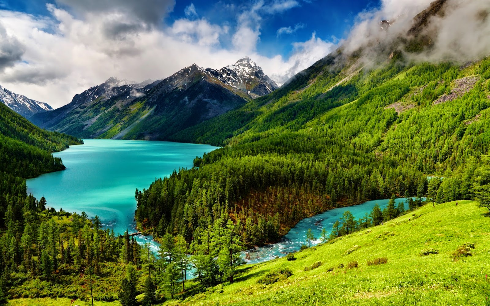

A natureza, em seu sentido mais amplo, é equivalente ao "mundo natural" ou "universo físico". O termo "natureza" faz referência aos fenômenos do mundo físico, e também à vida em geral. Geralmente não inclui os objetos construídos por humanos.A natureza possui uma importância essencial na vida dos seres vivos, principalmente para os humanos, que dependem diariamente dos seus inúmeros recursos, como água potável, animais, alimentos, oxigênio, clima e o solo fértil para o plantio.
Ela está presente no dia a dia de muitos seres, que necessitam do seu desenvolvimento e equilíbrio para manter-se vivos. Por isso, movimentos e projetos são criados ao redor do mundo, alertando sobre as ações que causam a escassez dos recursos básicos, graves alterações climáticas e a extinção de animais.
Atualmente existem ONG's e Institutos como o IBAMA - Instituto Brasileiro do Meio Ambiente e dos Recursos Naturais Renováveis - que incentivam o cultivo de plantas e árvores, o consumo equilibrado de recursos e o não desmatamento, orientando sobre os futuros riscos para todas as espécies.
A Natureza e o conceito da vida
No conceito da palavra natureza, existe a definição do fenômeno da vida, que para muitos biólogos é tudo aquilo que cresce e se desenvolve sem a intervenção humana, causando uma oposição entre o natural e o artificial.
Os elementos essenciais da natureza são aqueles que têm a capacidade de organização, metabolismo, crescimento, adaptação, resposta à estímulos e reprodução.
Entenda mais sobre o significado de Metabolismo e Reino Protista.
O que compõe a natureza
Entre os componentes mais conhecidos encontram-se os animais, grupo que inclui os seres humanos, os fungos, as bactérias, os protistas e o reino das plantas.
Diferente do que muitos pensam, a paisagem não é um componente da natureza. Para os estudiosos, ela é o resultado do nascimento e desenvolvimento dos elementos da natureza, como plantas, animais e a vida marinha.
